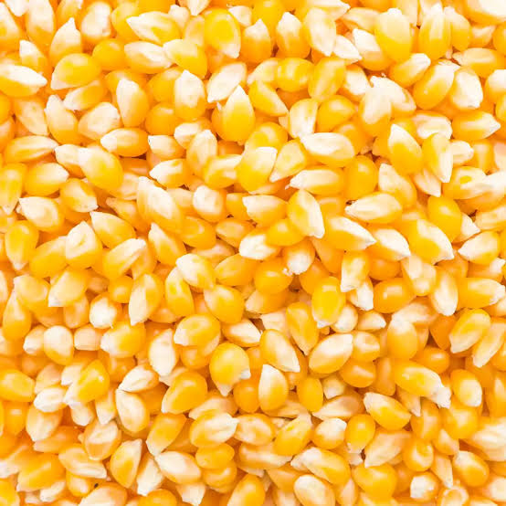
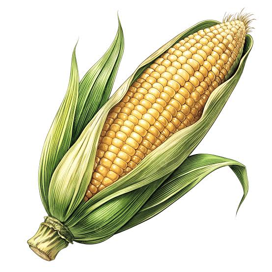
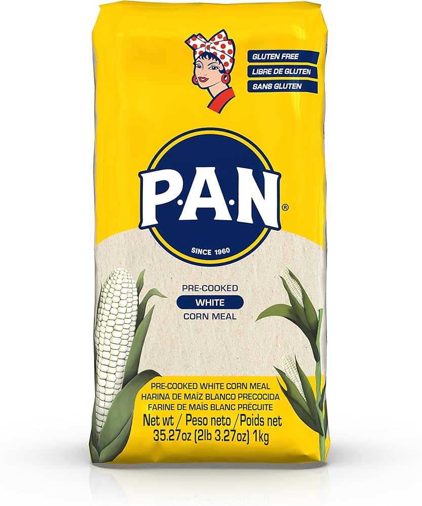
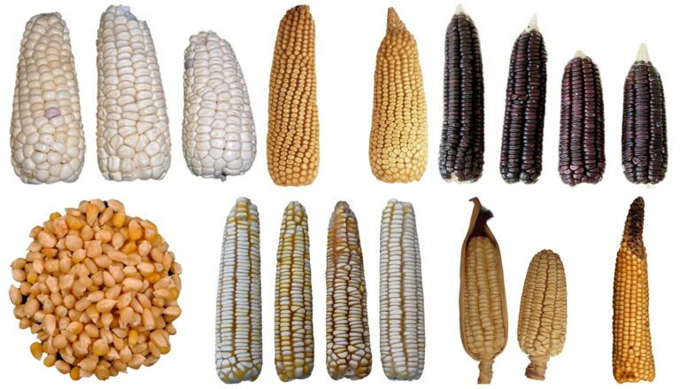

Galería Multimedia
Maíz blanco
El maíz blanco es uno de los más conocidos y usados en la cocina tradicional. Se utiliza mucho para preparar arepas, tortillas y otros alimentos que forman parte de la vida diaria. Su sabor suave lo hace muy versátil y fácil de combinar con muchos ingredientes.

Maíz amarillo
El maíz amarillo destaca por su color brillante y por ser muy nutritivo. Es común verlo en distintas preparaciones, tanto en alimentos caseros como en productos procesados. Además de ser apetitoso, también aporta energía y un toque especial a muchas recetas.
Maíz morado
El maíz morado llama mucho la atención por su color diferente y por su valor cultural. En algunos países se utiliza para preparar bebidas, postres y platos tradicionales. Es un tipo de maíz que representa muy bien la diversidad de este alimento.

Mazorca de maíz
La mazorca es la forma más conocida del maíz cuando todavía está en su estado natural. Ver una mazorca fresca nos recuerda el trabajo del campo y todo el proceso que sigue la planta hasta estar lista para ser cosechada. Es una parte esencial del cultivo.
Cultivo de maíz
El cultivo del maíz es un proceso que requiere tiempo, cuidado y esfuerzo. Desde la siembra hasta la cosecha, cada etapa es importante para obtener un buen resultado. Detrás de cada planta hay trabajo agrícola y dedicación de muchas personas.

Harina de maíz
La harina de maíz es uno de los productos más útiles y conocidos que se obtienen de este cereal. Con ella se pueden preparar arepas, cachapas, empanadas y muchas otras comidas. Es un ingrediente básico en muchas cocinas del mundo.
El maíz y el medio ambiente
El maíz es una planta que depende de los recursos naturales para crecer y desarrollarse correctamente. Factores como la luz solar, el agua y la calidad del suelo influyen directamente en su producción. Por esta razón, muchos agricultores buscan aplicar prácticas que permitan cuidar el medio ambiente mientras mantienen cultivos saludables y productivos.

Curiosidades sobre el maíz
El maíz es una de las plantas más cultivadas del mundo y existen cientos de variedades diferentes. Dependiendo de la región, puede encontrarse en distintos colores como amarillo, blanco, rojo, azul e incluso morado. Además, cada variedad posee características particulares que la hacen adecuada para diferentes usos culinarios y agrícolas, demostrando la gran diversidad que existe dentro de este importante cultivo.